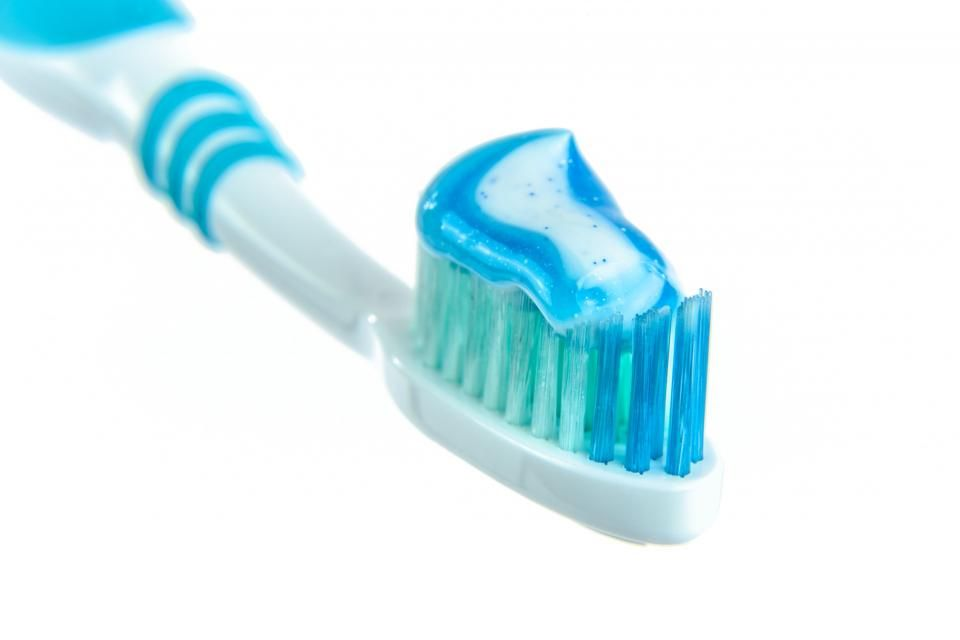

Orthodontic treatment
We align teeth and improve bite using braces and clear aligners.
Preview made for Vinayaka Dental Clinic by adris.tech - not their official website
Dental care in Rajajinagar
Vinayaka Dental Clinic serves families in Rajajinagar with gentle dental care. Sunil Kumar and Dr. Sonai Rani lead the team.
We align teeth and improve bite using braces and clear aligners.
Cleaning and fluoride application help keep teeth healthy.
Sample photos - your own photos of Vinayaka Dental Clinic go here.

Rajajinagar, Bengaluru.
Sunil Kumar, Dr. Sonai Rani.
Tell us what you need and pick a time.
Rajajinagar, Bengaluru
Earlier reports and prescriptions help us help you.
Rajajinagar, Bengaluru.
Call us, or email vinayakadentalclinic@gmail.com.
Please call before you visit to confirm today's timings.
Orthodontic treatment, Preventive care.
Send us an email to schedule your visit
adris.tech designed it as a free sample. The buttons are switched off while it is a preview. Like it? We can make it your official website - with your own photos, your timings and online booking.